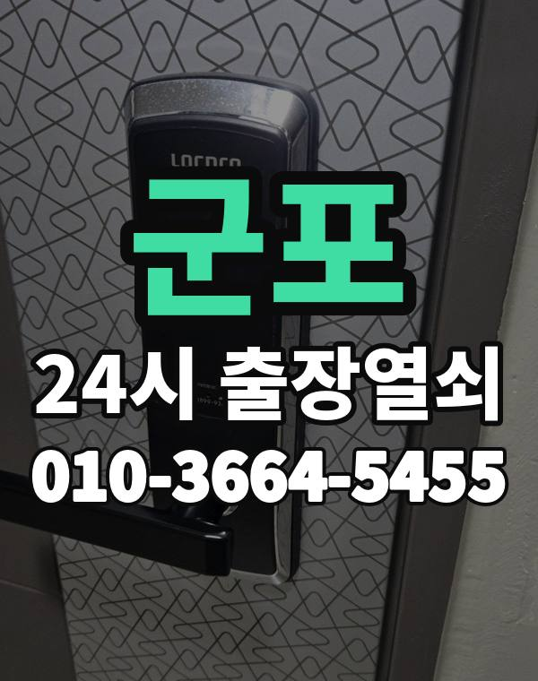

군포 출장 다니며 보는 동네
군포는 산본 신도시 아파트와 금정동 상가, 당동, 부곡동, 대야미동 주택가가 모여 있는 도시입니다.
산본은 1990년대 초 입주한 단지가 많아 문틀 처짐과 도어락 노후 연락이 꾸준합니다.

군포시 출장 가는 동네
- 산본동
- 금정동
- 당동
- 당정동
- 부곡동
- 대야미동
- 오금동
산본동 출장열쇠, 금정동 열쇠집처럼 동네 이름으로 찾으셨어도 같은 곳입니다.
적혀 있지 않은 동네도 군포시 안이면 다 갑니다.
군포에서 맡기실 수 있는 일
군포 출장 부르실 때
산본역, 금정역 중 어디가 가까운지 알려주시면 위치 찾기가 쉬워집니다.
대야미동 주택가도 출동합니다.
산본역, 금정역, 군포역, 대야미역 근처라고 말씀해 주셔도 위치 잡기가 쉬워집니다.
가까운 역이나 큰 건물, 단지 이름을 같이 알려주세요.
- 정확한 주소, 아파트라면 동과 호수
- 번호판 상태 (꺼짐, 켜짐, 경고음)
- 거주 확인용 신분증이나 주소 나온 우편물
전화부터 작업까지 순서는 이용안내에 적어 두었습니다.
군포 출장열쇠 관련 글
- 군포 부곡동 현관문 보조키가 잠겨 안 열릴 때, 걸쇠 걸림까지 확인할 것
- 군포 부곡동 카드키·태그 분실했을 때, 도어락 카드 잃어버리고 문 앞에서 막히면
- 군포 부곡동 열쇠집 고르는 기준, 출장열쇠 전화할 때 꼭 물어볼 것
- 군포 부곡동 데드볼트가 안 들어가고 안 빠질 때 출장열쇠 점검 순서
- 군포 부곡동 입주·퇴거 때 도어락 확인할 것, 이사 당일 문이 안 열릴 때 출장열쇠
- 군포 부곡동 비파손 개방이란? 문과 도어락을 안 상하게 여는 방법
- 군포 부곡동 화장실·방문이 안에서 잠겼을 때 아이와 어른 모두 안전하게 여는 법
- 군포 대야미동 한파에 도어락이 느리거나 꺼질 때 대처법
- 군포 대야미동 택배 받으러 나갔다가 문이 잠겼을 때 출장열쇠 부르는 순서
- 군포 대야미동 현관문 안 열림, 원인별로 확인하고 출장열쇠 부르는 순서
- 군포 대야미동 대문·철문 안 열릴 때 출장열쇠 부르기 전 확인할 것과 진행 순서
- 군포 대야미동 도어락 경고음 계속 울릴 때, 모터 소리만 나고 안 열리는 경우 확인법
- 군포 당동 문이 열린 뒤 꼭 점검할 것, 도어락 문제 다시 안 생기게
- 군포 당동 현관문 닫을 때 쿵 소리 나고 삐걱거릴 때 점검할 것
- 군포 당동 부모님 집 도어락 점검, 어르신이 쓰기 편한 설정과 출장열쇠 부를 때
- 군포 당동 지문 도어락 지문 인식이 안 될 때 원인과 출장열쇠 부르기 전 확인할 것
- 군포 당동 장마·겨울철 도어락 오작동, 습기와 결로로 번호판이 안 먹힐 때
- 군포 당동 한밤·새벽 현관문 안 열림, 밤늦게 출장열쇠 부를 때 알아둘 것
- 군포 당동 열쇠 잃어버렸을 때, 문 잠그고 나온 날 출장열쇠 부르는 순서
- 군포 당정동 베란다 미닫이문·방문 잠금장치가 안 열릴 때 출장열쇠 부르기 전 확인할 것
- 군포 당정동 도어락 비밀번호 기억이 안 날 때, 가족이 바꾼 번호까지 열고 다시 정하기
- 군포 당정동 현관문 손잡이가 헐겁고 헛돌 때 점검과 수리 순서
- 군포 당정동 우편함 사물함 열쇠 잃어버렸을 때 출장열쇠 확인할 것
- 군포 당정동 이사 후 도어락 초기화, 전 집주인 번호 지우고 새 비밀번호 정하기
- 군포 당정동 상가·사무실 도어락 고장과 문 잠김, 출장열쇠 부르기 전 확인
- 군포 금정동 도어락 배터리 방전, 번호판 꺼졌을 때 출장열쇠 부르기 전 대처법
- 군포 금정동 출장열쇠 부르기 전에 준비할 것, 사진과 위치만 있으면 빨라집니다
- 군포 금정동 열쇠가 부러져 열쇠구멍에 박혔을 때 대처 방법
- 군포 금정동 현관 방범 점검 요령, 도어락과 문틀 집에서 직접 확인하는 법
- 군포 금정동 오래된 문 문틀이 처져 안 열릴 때, 경첩과 걸쇠부터 확인하는 법
- 군포 금정동 원룸·오피스텔 출입문 잠김, 금정역 근처 출장열쇠 부르는 법
- 군포 금정동 도어락 비밀번호 관리법, 가족과 번호 공유하고 주기적으로 바꾸는 요령
- 군포 금정동 자취방·고시원·쉐어하우스 출입문 잠겼을 때 출장열쇠 부르기 전 확인할 것
- 군포 오금동 현관문이 덜 닫히거나 쾅 닫힐 때, 경첩과 도어클로저 점검법
- 군포 오금동 도어락 교체 전에 확인할 것, 비용은 이렇게 안내합니다
- 군포 오금동 여름에 현관문이 뻑뻑하고 잘 안 닫힐 때 점검 순서
- 군포 산본동 아이나 반려동물만 집 안에 있는데 문이 잠겼을 때 해야 할 일
- 군포 산본동 현관문 안 열림 출장열쇠 부르기 전에 확인할 것
- 군포 산본동 가사도우미·손님에게 임시 비밀번호 알려줄 때 도어락 안전하게 쓰는 법
- 군포 산본동 명절과 여행 다녀온 뒤 문이 안 열릴 때 확인할 것
- 군포 산본동 문 열기 전에 신분 확인을 하는 이유와 준비물 안내
- 군포 산본동 도어락 설치 전 확인할 것, 문 두께·보조키·손잡이 방향 재는 법
- 군포 산본동 열쇠가 안 돌아가고 안 빠질 때 출장열쇠 부르기 전 확인
- 군포 산본동 세입자·집주인 도어락 문제 생겼을 때 먼저 확인할 것과 출장열쇠 부르는 순서
- 군포 산본동 스마트 도어락 고르는 법, 지문·카드·번호 방식 어떤 걸 써야 할까
- 군포 산본동 스마트 도어락 앱 연동·알림이 안 될 때 확인할 것과 출장열쇠 점검
군포 출장열쇠 자주 묻는 질문
군포 어느 동네까지 오시나요?
산본동, 금정동, 당동, 당정동, 부곡동, 대야미동 등 군포시 전 지역 갑니다. 목록에 없는 동네도 전화로 위치만 알려주시면 됩니다.
새벽에 군포에서 전화해도 되나요?
시간 상관없이 출동합니다. 주소를 받으면 도착 시간부터 알려드립니다.
끝내 못 열면 돈은 어떻게 되나요?
열지 못하면 비용은 없습니다. 작업 전에 금액을 듣고 정하시면 됩니다.
집주인이 아니어도 열어 주나요?
사시는 분이 맞는지만 확인되면 됩니다. 신분증이나 우편물을 준비해 주세요.
군포에서 도어락 고장도 봐주시나요?
네, 합니다. 문에 맞는 제품인지 보고, 고칠 수 있으면 수리를 먼저 권합니다.